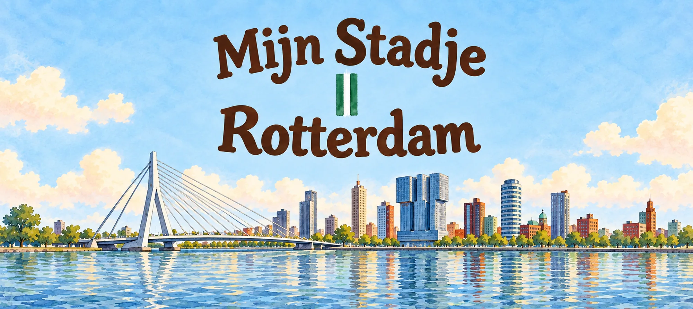

Kandidaat · In ontwikkeling
Noah ontdekt Rotterdam
Van de Kop van Zuid tot de Markthal — Noah's Rotterdamse avontuur volgt na Amsterdam. De route door de stad wordt nog uitgedacht.
Nog geen releasedatum — volg de serie om als eerste te weten wanneer dit boek verschijnt.